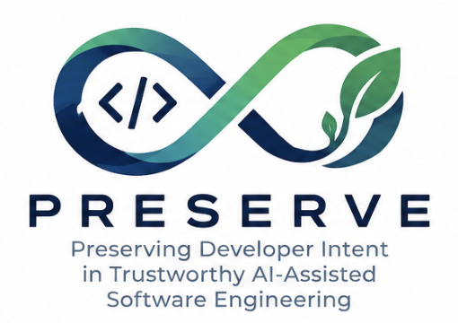

Preserving developer intent in trustworthy AI-assisted software engineering
Developers increasingly tell AI agents what they want instead of writing the code themselves. PRESERVE makes that intent a first-class engineering artifact, captured, formalized, verified and optimized across the whole software lifecycle, under continuous human oversight.

Prompts have become specifications. Nobody engineers them.
In April 2026 an AI coding agent deleted a company's production database and its backups in nine seconds, despite explicit instructions forbidding destructive actions. Other analyses counted more than 380,000 publicly exposed assets produced by AI-assisted development platforms, thousands of them leaking sensitive corporate and personal data.
These failures share a root cause. Developer intent, meaning the functional and non-functional goals, architectural assumptions, governance constraints and trade-offs a system must respect, is handed to the AI as a transient prompt and then lost. The literature has started to call this intent debt. Agentic and distributed development make it worse, because intent is split across many agents, components and artifacts that can silently conflict.
No continuous intent engineering
Prompts are optimized for one generation step and then discarded, rather than managed as artifacts.
No adaptive human-in-the-loop
Developers validate through fixed feedback patterns, with no model of when and how they should step in.
Verification comes too late
Testing and formal checks happen after generation instead of following intent through the lifecycle.
Optimization ignores priorities
Quality attributes are optimized one at a time, without the trade-offs the developer actually asked for.
The intent engineering loop
PRESERVE establishes intent engineering as a research field. It is operationalized as an iterative four-phase loop, with the developer governing every step.
Capture
Developers and AI agents refine and structure intent together: requirements, compliance constraints, architectural decisions and sustainability concerns.
Formalize
Intent becomes formal and semi-formal representations, so ambiguities, contradictions, requirement drift and unsafe assumptions can be detected automatically.
Verify
Generated code is continuously checked against validated specifications, so intent survives every step of the AI-assisted workflow.
Optimize & evolve
Systems are tuned to the developer's quality and sustainability trade-offs, and intent is kept as versioned, traceable artifacts that evolve with the code.
↻ A shared knowledge base collects traces and lessons from every phase and feeds them back into the quality models.
Four objectives
Beyond the lab
Scientific
Establishes intent engineering as a new research direction, with shared models, benchmarks and methods that the research community can reuse.
Industrial
Gives companies practical workflows to supervise, verify and optimize AI-generated software, tested together with industrial partners.
Economic
Reduces the cost of debugging, verifying and maintaining unreliable AI-generated code.
Societal
Promotes transparency, accountability and human oversight in AI-assisted development, in line with the EU AI Act.
Environmental
Encourages more sustainable software by avoiding wasteful code generation and inefficient deployments.
Training
Brings trustworthy AI-assisted software engineering into courses, theses and doctoral training.
Research units
PRESERVE brings together empirical software engineering, NLP and human-in-the-loop interaction, testing and formal verification, maintainability, performance engineering and distributed systems.
International advisors
Researchers and practitioners who review progress, deliverables, risks and future directions in annual panels.
Companies supporting the project
They contribute to requirements elicitation, use-case definition and validation, across geospatial AI, enterprise software workflows, cybersecurity, and agentic and distributed systems.
Six technical work packages
WP2 builds the foundations of intent engineering and feeds every other work package. WP3 and WP4 formalize and verify intent, while WP5, WP6 and WP7 cover three dimensions of intent-aware optimization.
Results, data and events
Publications, datasets, meetings and talks from the project will be listed here as they become available.
Shape how people and AI build software together
Curious about AI coding agents, trustworthy software and human-AI collaboration? PRESERVE welcomes students and young researchers who want to work with us on these topics.
If you are interested, get in touch with the referent of the research unit closest to you.